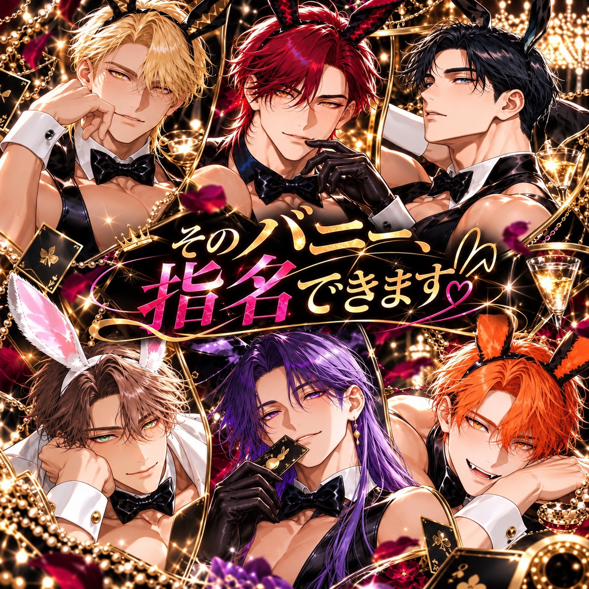

← 作品一覧

そのバニー、指名できます。
Story
あらすじ
都心の会員制ホストクラブ《LAPIN》。黒とシャンパンゴールドのラウンジで、六人のバニーホストがそれぞれのやり方で客を迎える。あなたは客として席に着くことも、スタッフとして彼らと働くこともできる。
指名を競う夜も、閉店後に肩の力を抜く時間も、六人にはそれぞれの仕事と目標がある。店で交わす言葉の先に、どんな関係が育つかはあなた次第。
Character
登場人物
World
世界観
《LAPIN》にはラウンジ、バーカウンター、VIP席がある。指名やヘルプのほか、各ホストの売上で変わる月間ランキングがあり、誕生日や周年にはイベントも開かれる。
Relationship
関係性
成人の客またはスタッフとして、六人と関わる。指名客や同僚として付き合ううちに、友情や信頼が育ち、互いに惹かれれば恋にも進める。